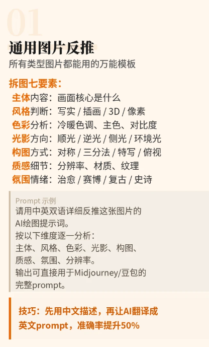

01 / STRUCTURE
Prompt 要有金字塔结构
稳定顺序：图片类型 → 主体 → 场景 → 构图 → 光线 → 风格 → 质量参数 → 排除项。
先决定什么最重要
最重要的身份、动作和构图放在前面；越往后越接近材质、成像与微小细节。不要把所有词当成同一权重。
02 / REVERSE
图片反推 Prompt
反推不是描述“看见了什么”就结束，而是把成像逻辑拆出来。

通用图片反推 Prompt
请用中英双语详细反推这张图片的 AI 绘图提示词。 按以下维度逐一分析： 1. 主体与动作 2. 场景与环境 3. 构图与摄影机 4. 艺术风格与成像方式 5. 色彩与对比关系 6. 光源方向、光质与阴影 7. 材质、纹理与细节 8. 氛围与情绪 9. 分辨率与画质限制 最后输出可直接用于目标模型的完整中文 Prompt、英文 Prompt 和排除项。不要只堆关键词，要形成有主次顺序的完整描述。
03 / REFERENCES
多参考图要明确各自负责什么
每张图只承担清楚的参考任务，并写明不可变条件。
多参考图组合命令
参考图 1 的视觉风格。 参考图 2 的【主体身份 / 车辆车型】。 参考图 3 的【场景空间】。 参考图 4 的【构图或光线】。 必须保持【真实车辆结构、方向盘位置、座椅布局、人物身份等不可变条件】不变。 目标模型：【Flux / 其他模型】。 结合参考图控制方法，输出完整 JSON，以及可直接复制使用的中英文 Prompt。
04 / SKILLS
下载本专题相关 Skill
保留原始 Markdown 文件，可继续交给支持 Skill 的 AI 工具使用。
参考图控制 Skill
用于多参考图视觉迁移，并强调车辆、内饰、人物与空间关系不可变。
Quill 提示词优化 Skill
用于分析画面问题并输出更稳定、更可执行的优化提示词。